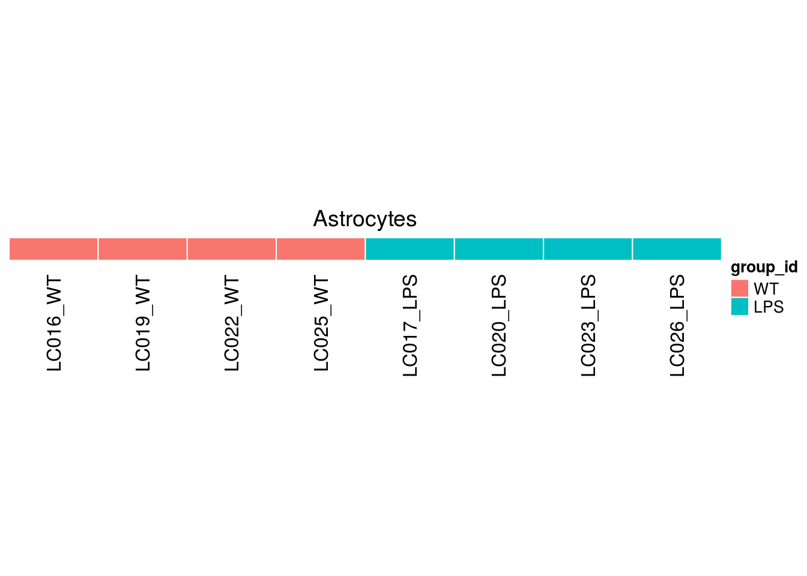
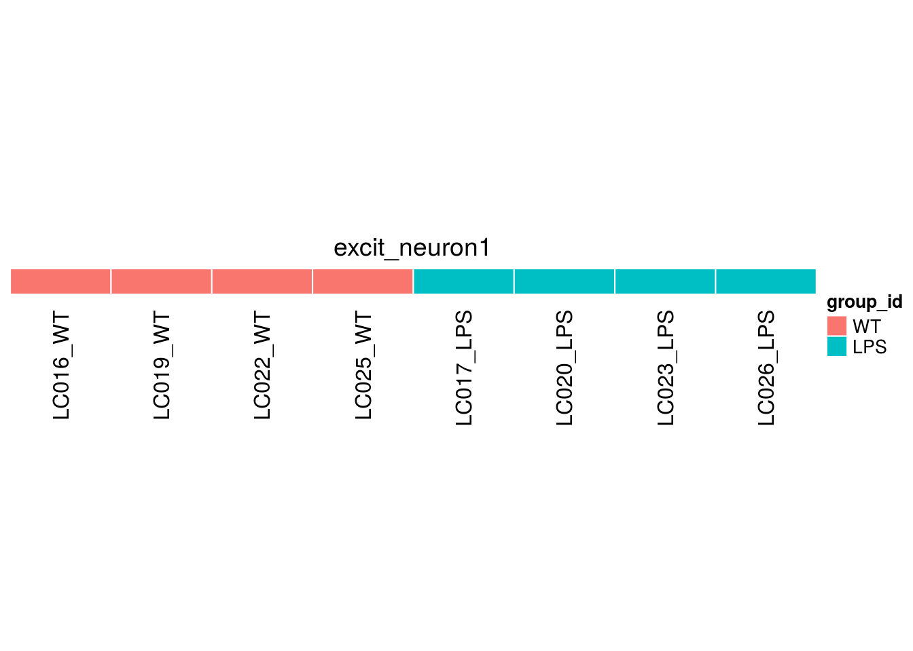
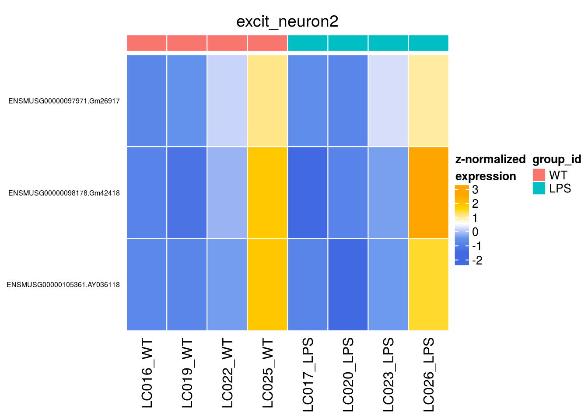
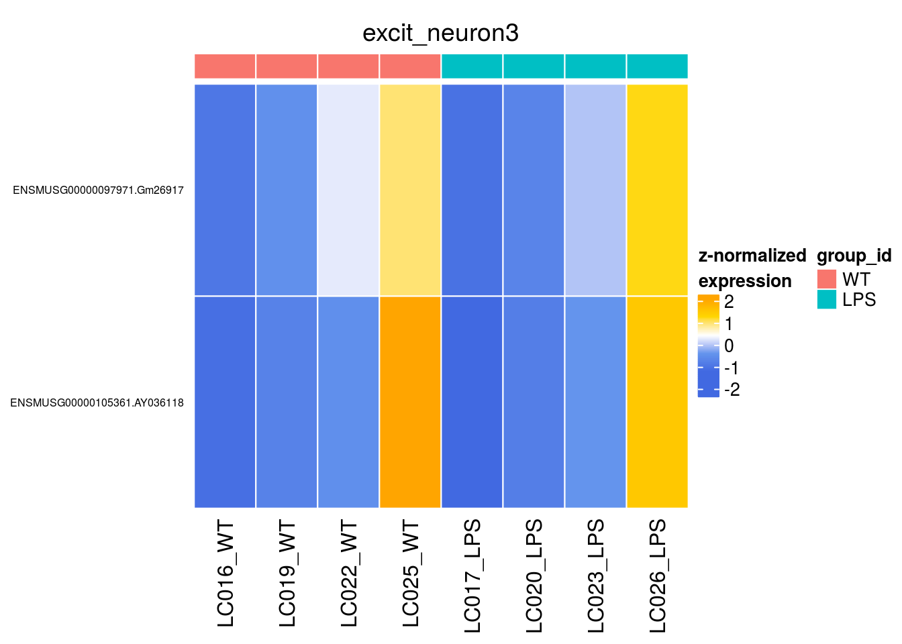
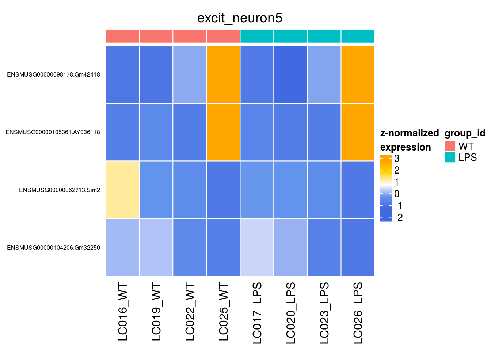
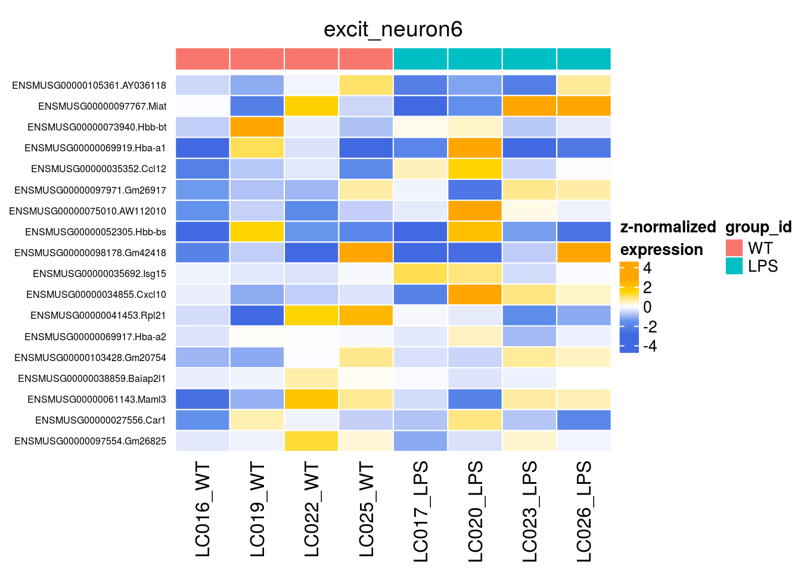
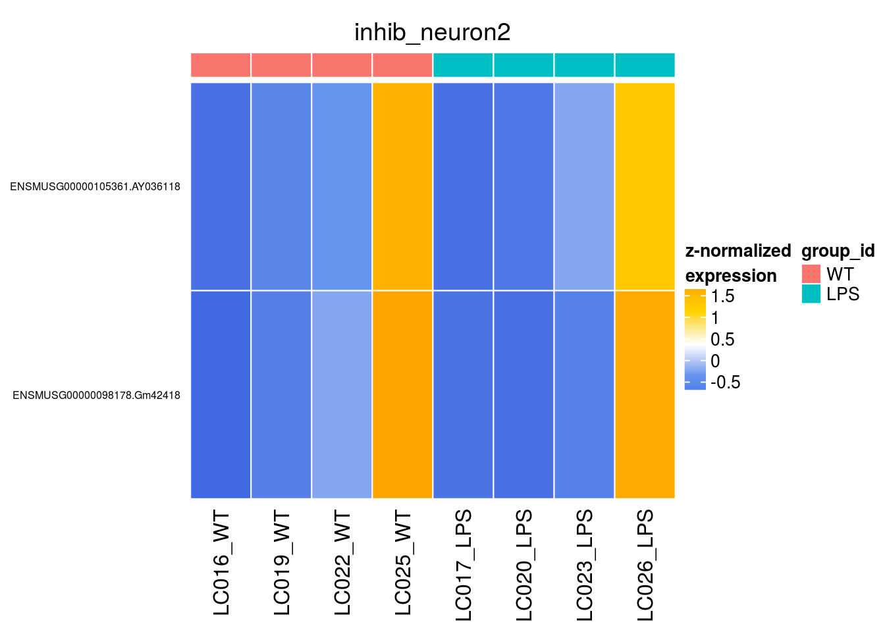
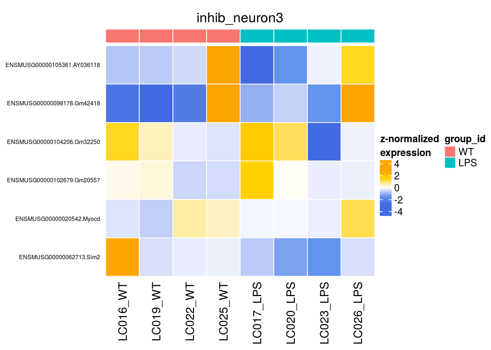
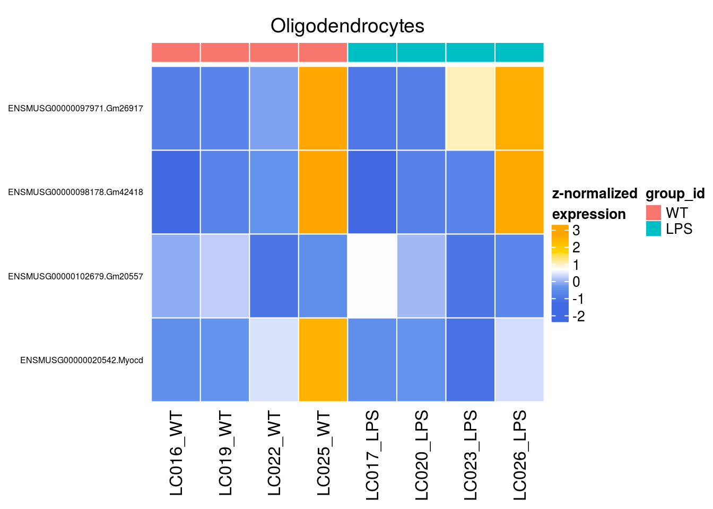
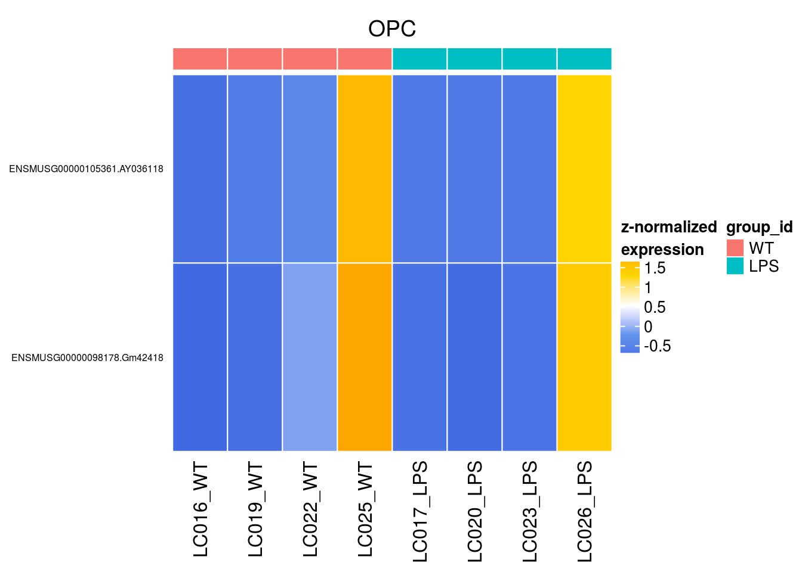

Last updated: 2019-05-15
Checks: 4 2
Knit directory: MAGL/
This reproducible R Markdown analysis was created with workflowr (version 1.3.0). The Checks tab describes the reproducibility checks that were applied when the results were created. The Past versions tab lists the development history.
The R Markdown is untracked by Git. To know which version of the R Markdown file created these results, you’ll want to first commit it to the Git repo. If you’re still working on the analysis, you can ignore this warning. When you’re finished, you can run wflow_publish to commit the R Markdown file and build the HTML.
Great job! The global environment was empty. Objects defined in the global environment can affect the analysis in your R Markdown file in unknown ways. For reproduciblity it’s best to always run the code in an empty environment.
The command set.seed(20190311) was run prior to running the code in the R Markdown file. Setting a seed ensures that any results that rely on randomness, e.g. subsampling or permutations, are reproducible.
Great job! Recording the operating system, R version, and package versions is critical for reproducibility.
To ensure reproducibility of the results, delete the cache directory 3-differential_cache and re-run the analysis. To have workflowr automatically delete the cache directory prior to building the file, set delete_cache = TRUE when running wflow_build() or wflow_publish().
Great! You are using Git for version control. Tracking code development and connecting the code version to the results is critical for reproducibility. The version displayed above was the version of the Git repository at the time these results were generated.
Note that you need to be careful to ensure that all relevant files for the analysis have been committed to Git prior to generating the results (you can use wflow_publish or wflow_git_commit). workflowr only checks the R Markdown file, but you know if there are other scripts or data files that it depends on. Below is the status of the Git repository when the results were generated:
Ignored files:
Ignored: .DS_Store
Ignored: .snakemake/
Ignored: MAGL/.DS_Store
Ignored: MAGL/.RData
Ignored: MAGL/.Rhistory
Ignored: MAGL/analysis/3-differential_cache/
Ignored: MAGL/analysis/figure/
Ignored: MAGL/data/
Ignored: MAGL/output/
Ignored: config/
Ignored: data/
Ignored: figures/
Ignored: metadata/
Ignored: results/
Untracked files:
Untracked: .RData
Untracked: .Rhistory
Untracked: ._README.md
Untracked: ._Snakefile
Untracked: ._config.yaml
Untracked: MAGL/._.DS_Store
Untracked: MAGL/._.Rprofile
Untracked: MAGL/._data
Untracked: MAGL/analysis/._refs.bib
Untracked: MAGL/analysis/3-differential.Rmd
Untracked: MAGL/analysis/refs.bib
Untracked: MAGL/docs/figure/3-differential.Rmd/
Untracked: scripts/._apply_ad.R
Untracked: scripts/._apply_mm.R
Untracked: scripts/._apply_scdd.R
Untracked: scripts/._calc_conc.R
Untracked: scripts/._countsimQC.R
Untracked: scripts/._data_sim.R
Untracked: scripts/._meth_pars.R
Untracked: scripts/._plot_conc.R
Untracked: scripts/._plot_padj_local_vs_global.R
Untracked: scripts/._plot_pbMDS.R
Untracked: scripts/._plot_perf_combined.R
Untracked: scripts/._plot_perf_split_by_cat.R
Untracked: scripts/._plot_perf_split_by_lfc.R
Untracked: scripts/._plot_perf_vs_ncells.R
Untracked: scripts/._plot_sim_pars.R
Untracked: scripts/._plot_summary.R
Untracked: scripts/._plot_upsets.R
Untracked: scripts/._run_method.R
Untracked: scripts/._sim_data.R
Untracked: scripts/._sim_pars.R
Untracked: scripts/._utils.R
Untracked: scripts/plot_padj_local_vs_global.R
Untracked: scripts/plot_pbMDS.R
Untracked: scripts/plot_perf_combined.R
Untracked: scripts/plot_perf_split_by_cat.R
Untracked: scripts/plot_perf_split_by_lfc.R
Untracked: scripts/plot_sim_ex_hm.R
Untracked: scripts/plot_sim_pars.R
Untracked: scripts/plot_sim_vs_est_logFC.R
Untracked: scripts/plot_summary.R
Unstaged changes:
Modified: MAGL/analysis/2-annotation.Rmd
Modified: MAGL/analysis/_site.yml
Deleted: MAGL/analysis/about.Rmd
Modified: MAGL/analysis/index.Rmd
Deleted: MAGL/analysis/license.Rmd
Modified: Snakefile
Modified: config.yaml
Modified: scripts/apply_ad.R
Modified: scripts/apply_mast.R
Modified: scripts/apply_mm.R
Modified: scripts/apply_pb.R
Modified: scripts/apply_scdd.R
Modified: scripts/calc_conc.R
Modified: scripts/countsimQC.R
Modified: scripts/meth_pars.R
Modified: scripts/plot_conc.R
Modified: scripts/plot_null.R
Deleted: scripts/plot_padj_loc_vs_glb.R
Modified: scripts/plot_pb_mean_vs_disp.R
Modified: scripts/plot_perf.R
Deleted: scripts/plot_perf_split.R
Modified: scripts/plot_perf_vs_ncells.R
Deleted: scripts/plot_perf_vs_ncells_box.R
Modified: scripts/plot_upsets.R
Modified: scripts/run_method.R
Modified: scripts/sim_data.R
Modified: scripts/sim_pars.R
Modified: scripts/utils.R
Note that any generated files, e.g. HTML, png, CSS, etc., are not included in this status report because it is ok for generated content to have uncommitted changes.
There are no past versions. Publish this analysis with wflow_publish() to start tracking its development.
library(ComplexHeatmap)
library(cowplot)
library(limma)
library(magrittr)
library(muscat)
library(scater)
library(SingleCellExperiment)muscatdrop = FALSE specifies that we wish to retain all available cell metadata columns besides those specified as group/sample/cluster_id columns.
sce0 <- readRDS(file.path("output", "MAGL-SCE.rds"))
# concat. sample & group ID
sce0$id <- factor(paste(sce0$sample_id, sce0$group_id, sep = "_"))
# make WT reference group
sce0$group_id <- factor(sce0$group_id, levels = c("WT", "LPS"))
# reorder sample levels
o <- sapply(levels(sce0$group_id), grep, levels(sce0$id))
sce0$id <- factor(sce0$id, levels = levels(sce0$id)[o])
sce <- prepSCE(sce0,
group_id = "group_id",
sample_id = "id",
cluster_id = "integrated_snn_res.0.2",
drop = FALSE)
metadata(sce)$experiment_info sample_id group_id n_cells
1 LC016_WT WT 4084
2 LC019_WT WT 2415
3 LC022_WT WT 3408
4 LC025_WT WT 3010
5 LC017_LPS LPS 2124
6 LC020_LPS LPS 3547
7 LC023_LPS LPS 3264
8 LC026_LPS LPS 4755In consideration of the visualizations provided in the Annotation tab and additional exploration with iSEE, we arrive at the following cluster annotations:
anno <- list(
"excit_neuron1" = c(0, 1, 4, 5, 16),
"excit_neuron2" = 7,
"excit_neuron3" = c(2, 20),
"excit_neuron4" = 9,
"excit_neuron5" = 14,
"excit_neuron6" = 8,
"inhib_neuron1" = c(10, 15),
"inhib_neuron2" = 11,
"inhib_neuron3" = 12,
"Astrocytes" = 3,
"OPC" = 13,
"Oligodendrocytes" = 6,
"Endothelial" = 18,
"Microglia" = 19)
# unassigned: 17, 21, 22, 23
m <- match(sce$cluster_id, unlist(anno))
ns <- vapply(anno, length, numeric(1))
lab <- rep.int(names(anno), ns)
sce$cluster_id <- lab[m]
# remove unassigned cells
sce <- sce[, !is.na(sce$cluster_id)]
sce$cluster_id <- factor(sce$cluster_id)
dim(sce)[1] 11309 25613system.time(pb <- aggregateData(sce)) user system elapsed
24.804 1.416 15.274 # SCE of dim. #(genes) x #(samples)
pb class: SingleCellExperiment
dim: 11309 8
metadata(2): experiment_info agg_pars
assays(14): Astrocytes Endothelial ... Oligodendrocytes OPC
rownames(11309): ENSMUSG00000051951.Xkr4 ENSMUSG00000089699.Gm1992
... ENSMUSG00000095041.PISD ENSMUSG00000063897.DHRSX
rowData names(0):
colnames(8): LC016_WT LC019_WT ... LC023_LPS LC026_LPS
colData names(0):
reducedDimNames(0):
spikeNames(0):# one assay per cluster
assayNames(pb) [1] "Astrocytes" "Endothelial" "excit_neuron1"
[4] "excit_neuron2" "excit_neuron3" "excit_neuron4"
[7] "excit_neuron5" "excit_neuron6" "inhib_neuron1"
[10] "inhib_neuron2" "inhib_neuron3" "Microglia"
[13] "Oligodendrocytes" "OPC" # view 1st cluster
head(assay(pb)) LC016_WT LC019_WT LC022_WT LC025_WT LC017_LPS
ENSMUSG00000051951.Xkr4 7 11 13 30 3
ENSMUSG00000089699.Gm1992 2 2 2 3 0
ENSMUSG00000033845.Mrpl15 5 18 21 16 1
ENSMUSG00000033813.Tcea1 5 17 16 10 6
ENSMUSG00000002459.Rgs20 33 275 219 94 82
ENSMUSG00000033793.Atp6v1h 7 25 20 17 4
LC020_LPS LC023_LPS LC026_LPS
ENSMUSG00000051951.Xkr4 7 9 19
ENSMUSG00000089699.Gm1992 0 1 2
ENSMUSG00000033845.Mrpl15 13 5 25
ENSMUSG00000033813.Tcea1 20 9 25
ENSMUSG00000002459.Rgs20 344 217 413
ENSMUSG00000033793.Atp6v1h 36 21 42Prior to conducting any formal testing, we can compute a multi-dimensional scaling (MDS) plot of aggregated signal to explore overall sample similarities. Ideally, such a represenation of the data should separate both clusters and groups from one another. Vice versa, samples from the same cluster/group should fall close to each other.
In our MDS plot on pseudobulk counts (Fig. @ref(fig:pb-mds)), we can observe that cell-populations (clusters) are separated quite well, while WT and stimulated samples (groups) are separated to a lesser (if any) extend.
pbMDS(pb)Pseudobulk-level MDS plot. Each point represent one cluster-sample instance; points are colored by cluster ID and shaped by group ID.
# specify design & contrast matrix
ei <- metadata(sce)$experiment_info
(design <- model.matrix(~ 0 + ei$group_id) %>%
set_rownames(levels(ei$sample_id)) %>%
set_colnames(levels(ei$group_id))) WT LPS
LC016_WT 1 0
LC017_LPS 1 0
LC019_WT 1 0
LC020_LPS 1 0
LC022_WT 0 1
LC023_LPS 0 1
LC025_WT 0 1
LC026_LPS 0 1
attr(,"assign")
[1] 1 1
attr(,"contrasts")
attr(,"contrasts")$`ei$group_id`
[1] "contr.treatment"(contrast <- makeContrasts("LPS-WT", levels = design)) Contrasts
Levels LPS-WT
WT -1
LPS 1system.time(res <- pbDS(sce, pb, design, contrast, verbose = FALSE)) user system elapsed
47.932 0.900 48.877 To get a general overview of the differential testing results, we first filter them to retain hits with \(\text{FDR}<5\%\) and \(~|~logFC~|~>1\), and view the number & percentage of differential findings by cluster. Finally, we extract the top hits (lowest adj. p-value) in each cluster.
tbl0 <- res$table$`LPS-WT`
# filter abs(logFC) > 1 & FDR < 0.05
tbl <- lapply(tbl0, dplyr::filter, abs(logFC) > 1, p_adj.loc < 0.05)
# sort by FDR
tbl <- lapply(tbl, dplyr::arrange, p_adj.loc)
# nb. & % of hits by cluster
n_de <- vapply(tbl, nrow, numeric(1))
cbind(n_de, perc = round(n_de / nrow(sce) * 100, 2)) n_de perc
Astrocytes 0 0.00
Endothelial 0 0.00
excit_neuron1 0 0.00
excit_neuron2 3 0.03
excit_neuron3 2 0.02
excit_neuron4 0 0.00
excit_neuron5 4 0.04
excit_neuron6 18 0.16
inhib_neuron1 0 0.00
inhib_neuron2 2 0.02
inhib_neuron3 6 0.05
Microglia 0 0.00
Oligodendrocytes 4 0.04
OPC 2 0.02# get top-hits for ea. cluster
top_gs <- lapply(tbl, function(u) {
n <- ifelse(nrow(u) < 6, nrow(u), 6)
u$gene[seq_len(n)]
})The scater(McCarthy et al. 2017) packages provides a variety of visualizations for single-cell data. Here, we use plotExpression to render violin plots of the top differential genes identified for each cluster. We specify x = "sample_id" to obtain one violin per sample, and colour_by = "group_id" to signify the experimental condition each sample belongs to.
# split cells by cluster
cs_by_k <- split(colnames(sce), sce$cluster_id)
kids <- levels(sce$cluster_id)
names(kids) <- kids
ps <- lapply(kids, function(k)
plotExpression(sce[, cs_by_k[[k]]], features = top_gs[[k]],
x = "sample_id", colour_by = "group_id") +
guides(fill = guide_legend(override.aes = list(size = 2, alpha = 1))) +
theme_classic() + theme(axis.text.x = element_text(angle = 45, hjust = 1, vjust = 1))) for (k in kids) {
cat("##### ",k, "\n")
print(ps[[k]])
cat("\n\n")
}# normalize & compute cluster-sample expression-means
sce <- normalize(sce)
ms <- aggregateData(sce, assay = "logcounts", fun = "mean")
# wrapper for z-normalization
.z_norm <- function(x, th = 2.5) {
x <- as.matrix(x)
sds <- rowSds(x, na.rm = TRUE)
sds[sds == 0] <- 1
x <- t(t(x - rowMeans(x, na.rm = TRUE)) / sds)
#x <- (x - rowMeans(x, na.rm = TRUE)) / sds
x[x > th] <- th
x[x < -th] <- -th
return(x)
}
# wrapper to plot differential heatmap
.plot_diff_hm <- function(ms, k, gs, ei) {
mat <- .z_norm(assays(ms)[[k]][gs, ])
m <- match(colnames(mat), ei$sample_id)
cols <- scales::hue_pal()(nlevels(ei$group_id))
names(cols) <- levels(ei$group_id)
col_anno <- columnAnnotation(
df = data.frame(group_id = ei$group_id[m]),
col = list(group_id = cols),
gp = gpar(col = "white"),
show_annotation_name = FALSE)
Heatmap(mat,
column_title = k,
name = "z-normalized\nexpression",
col = c("royalblue", "cornflowerblue", "white", "gold", "orange"),
cluster_rows = FALSE,
cluster_columns = FALSE,
row_names_side = "left",
row_names_gp = gpar(fontsize = 6),
rect_gp = gpar(col = "white"),
top_annotation = col_anno)
}
hms <- lapply(kids, function(k) .plot_diff_hm(ms, k, tbl[[k]]$gene, ei))









ps <- lapply(c(plotTSNE, plotUMAP), function(fun)
fun(sce, colour_by = "cluster_id", shape_by = "group_id",
point_size = 0.8, point_alpha = 0.4) +
scale_shape_manual(values = c(2, 3)) +
guides(shape = guide_legend(title = "group_id", ncol = 1,
override.aes = list(size = 3, alpha = 1)),
color = guide_legend(override.aes = list(size = 3, alpha = 1))) +
theme_bw() + theme(aspect.ratio = 1, panel.grid.minor = element_blank()))
Warning: 'add_ticks' is deprecated.
Use '+ geom_rug(...)' instead.
Warning: 'add_ticks' is deprecated.
Use '+ geom_rug(...)' instead.
lgd <- get_legend(ps[[1]] + theme(
legend.position = "bottom",
legend.direction = "horizontal"))
ps <- lapply(ps, "+", theme(legend.position = "none"))
ps <- plot_grid(plotlist = ps, nrow = 1, labels = "auto")
plot_grid(ps, lgd, ncol = 1, rel_heights = c(1, 0.2))Dimension reduction plots: t-SNE (a) and UMAP (b). Cells are colored by cluster ID and shaped by group ID.
saveRDS(sce, file.path("output", "MAGL-SCE_final.rds"))McCarthy, Davis J, Kieran R Campbell, Quin F Wills, and Aaron T L Lun. 2017. “Scater: Pre-Processing, Quality Control, Normalization and Visualization of Single-Cell RNA-Seq Data in R.” Bioinformatics 33 (8):1179–86. https://doi.org/10.1093/bioinformatics/btw777.
sessionInfo()R version 3.5.1 (2018-07-02)
Platform: x86_64-pc-linux-gnu (64-bit)
Running under: Ubuntu 16.04.5 LTS
Matrix products: default
BLAS: /usr/local/R/R-3.5.1/lib/libRblas.so
LAPACK: /usr/local/R/R-3.5.1/lib/libRlapack.so
locale:
[1] LC_CTYPE=en_CA.UTF-8 LC_NUMERIC=C
[3] LC_TIME=en_CA.UTF-8 LC_COLLATE=en_CA.UTF-8
[5] LC_MONETARY=en_CA.UTF-8 LC_MESSAGES=en_CA.UTF-8
[7] LC_PAPER=en_CA.UTF-8 LC_NAME=C
[9] LC_ADDRESS=C LC_TELEPHONE=C
[11] LC_MEASUREMENT=en_CA.UTF-8 LC_IDENTIFICATION=C
attached base packages:
[1] grid stats4 parallel stats graphics grDevices utils
[8] datasets methods base
other attached packages:
[1] ComplexHeatmap_1.20.0 scater_1.10.1
[3] SingleCellExperiment_1.4.1 SummarizedExperiment_1.12.0
[5] DelayedArray_0.8.0 BiocParallel_1.16.6
[7] matrixStats_0.54.0 Biobase_2.42.0
[9] GenomicRanges_1.34.0 GenomeInfoDb_1.18.2
[11] IRanges_2.16.0 S4Vectors_0.20.1
[13] BiocGenerics_0.28.0 muscat_0.99.8
[15] magrittr_1.5 limma_3.38.3
[17] cowplot_0.9.4 ggplot2_3.1.1
[19] BiocStyle_2.10.0
loaded via a namespace (and not attached):
[1] backports_1.1.4 circlize_0.4.6
[3] Hmisc_4.2-0 blme_1.0-4
[5] workflowr_1.3.0 plyr_1.8.4
[7] igraph_1.2.4.1 lazyeval_0.2.2
[9] splines_3.5.1 listenv_0.7.0
[11] digest_0.6.18 foreach_1.4.4
[13] htmltools_0.3.6 viridis_0.5.1
[15] gdata_2.18.0 lmerTest_3.1-0
[17] checkmate_1.9.3 memoise_1.1.0
[19] cluster_2.0.8 doParallel_1.0.14
[21] globals_0.12.4 annotate_1.60.1
[23] prettyunits_1.0.2 colorspace_1.4-1
[25] blob_1.1.1 xfun_0.7
[27] dplyr_0.8.1 crayon_1.3.4
[29] RCurl_1.95-4.12 genefilter_1.64.0
[31] lme4_1.1-21 survival_2.44-1.1
[33] iterators_1.0.10 glue_1.3.1
[35] gtable_0.3.0 zlibbioc_1.28.0
[37] XVector_0.22.0 GetoptLong_0.1.7
[39] Rhdf5lib_1.4.3 future.apply_1.2.0
[41] shape_1.4.4 HDF5Array_1.10.1
[43] scales_1.0.0 DBI_1.0.0
[45] edgeR_3.24.3 Rcpp_1.0.1
[47] viridisLite_0.3.0 xtable_1.8-4
[49] progress_1.2.1 htmlTable_1.13.1
[51] foreign_0.8-71 bit_1.1-14
[53] Formula_1.2-3 htmlwidgets_1.3
[55] gplots_3.0.1.1 RColorBrewer_1.1-2
[57] acepack_1.4.1 pkgconfig_2.0.2
[59] XML_3.98-1.19 nnet_7.3-12
[61] locfit_1.5-9.1 dynamicTreeCut_1.63-1
[63] labeling_0.3 tidyselect_0.2.5
[65] rlang_0.3.4 reshape2_1.4.3
[67] AnnotationDbi_1.44.0 munsell_0.5.0
[69] tools_3.5.1 RSQLite_2.1.1
[71] evaluate_0.13 stringr_1.4.0
[73] yaml_2.2.0 knitr_1.22
[75] bit64_0.9-7 fs_1.2.7
[77] caTools_1.17.1.2 purrr_0.3.2
[79] future_1.12.0 nlme_3.1-139
[81] scran_1.10.2 pbkrtest_0.4-7
[83] compiler_3.5.1 rstudioapi_0.10
[85] beeswarm_0.2.3 variancePartition_1.12.3
[87] tibble_2.1.1 statmod_1.4.30
[89] geneplotter_1.60.0 stringi_1.4.3
[91] highr_0.8 lattice_0.20-38
[93] Matrix_1.2-17 nloptr_1.2.1
[95] pillar_1.4.0 BiocManager_1.30.4
[97] GlobalOptions_0.1.0 BiocNeighbors_1.0.0
[99] data.table_1.12.2 bitops_1.0-6
[101] colorRamps_2.3 R6_2.4.0
[103] latticeExtra_0.6-28 KernSmooth_2.23-15
[105] gridExtra_2.3 vipor_0.4.5
[107] codetools_0.2-16 gtools_3.8.1
[109] boot_1.3-20 MASS_7.3-51.3
[111] assertthat_0.2.1 rhdf5_2.26.2
[113] DESeq2_1.22.2 rprojroot_1.3-2
[115] rjson_0.2.20 withr_2.1.2
[117] sctransform_0.2.0 GenomeInfoDbData_1.2.0
[119] hms_0.4.2 rpart_4.1-15
[121] minqa_1.2.4 rmarkdown_1.12
[123] DelayedMatrixStats_1.4.0 git2r_0.25.2
[125] numDeriv_2016.8-1 base64enc_0.1-3
[127] ggbeeswarm_0.6.0